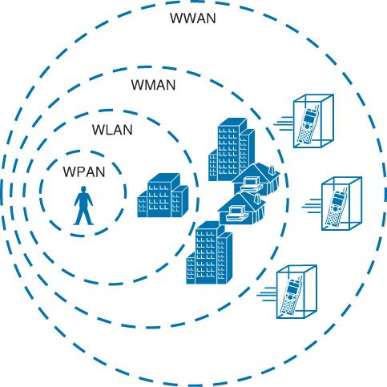
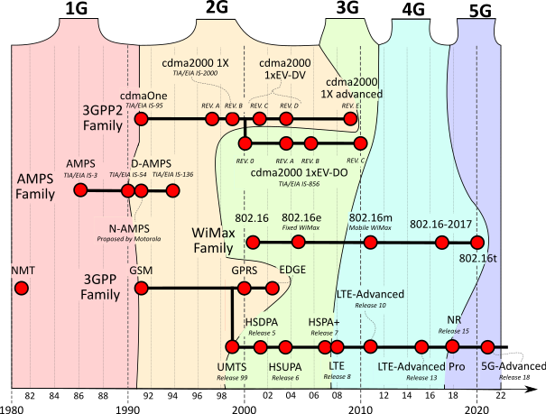
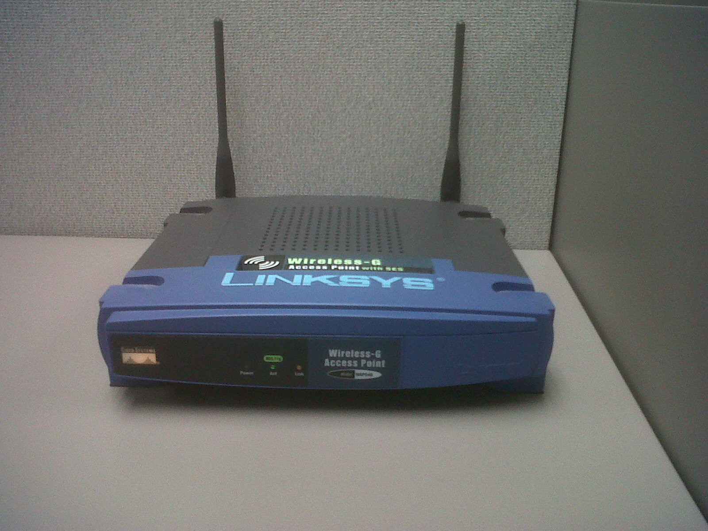
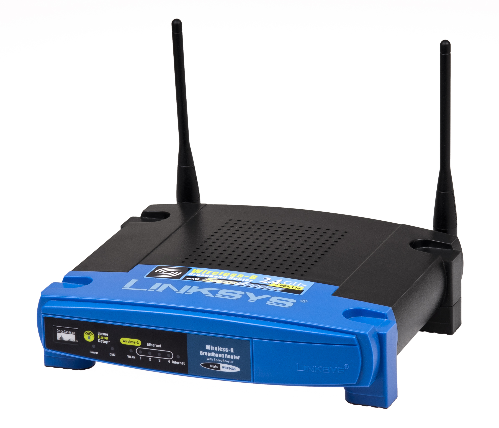
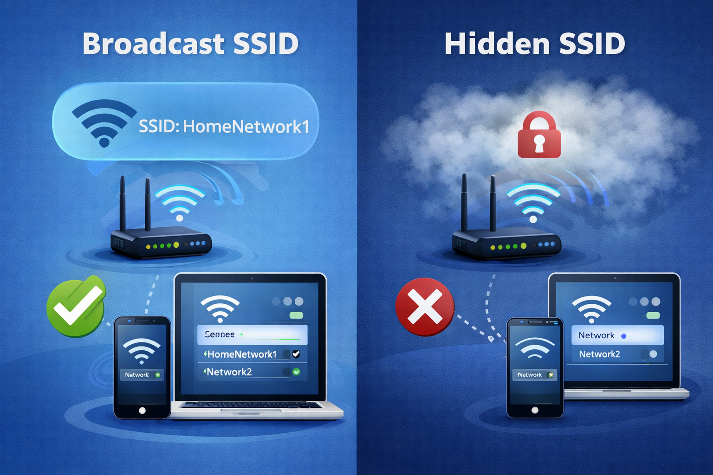
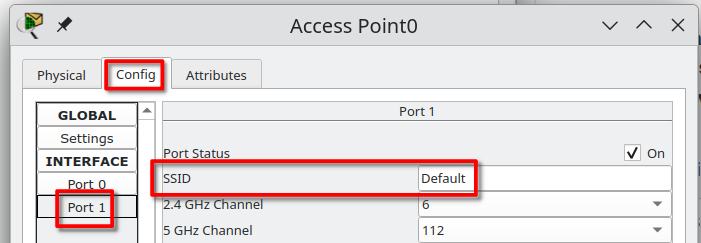
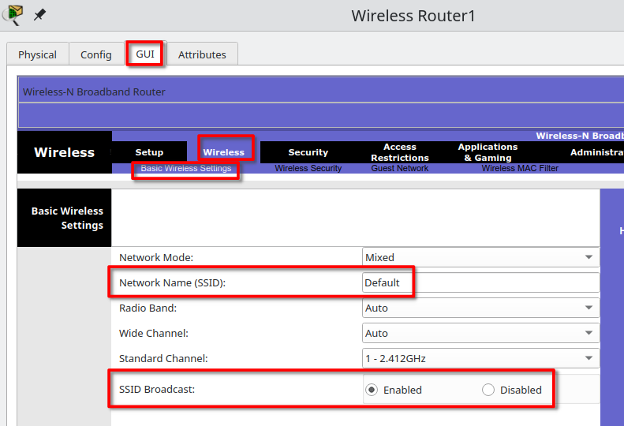
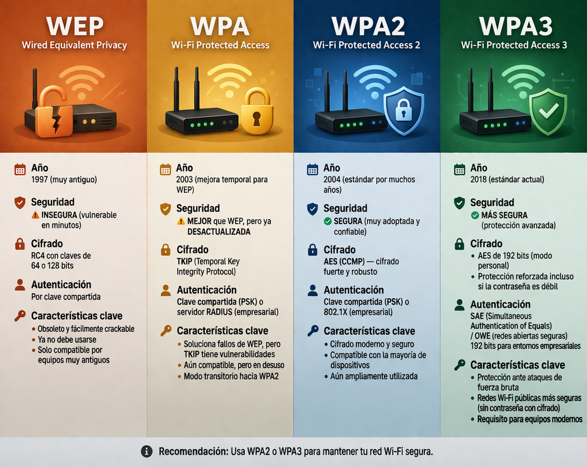
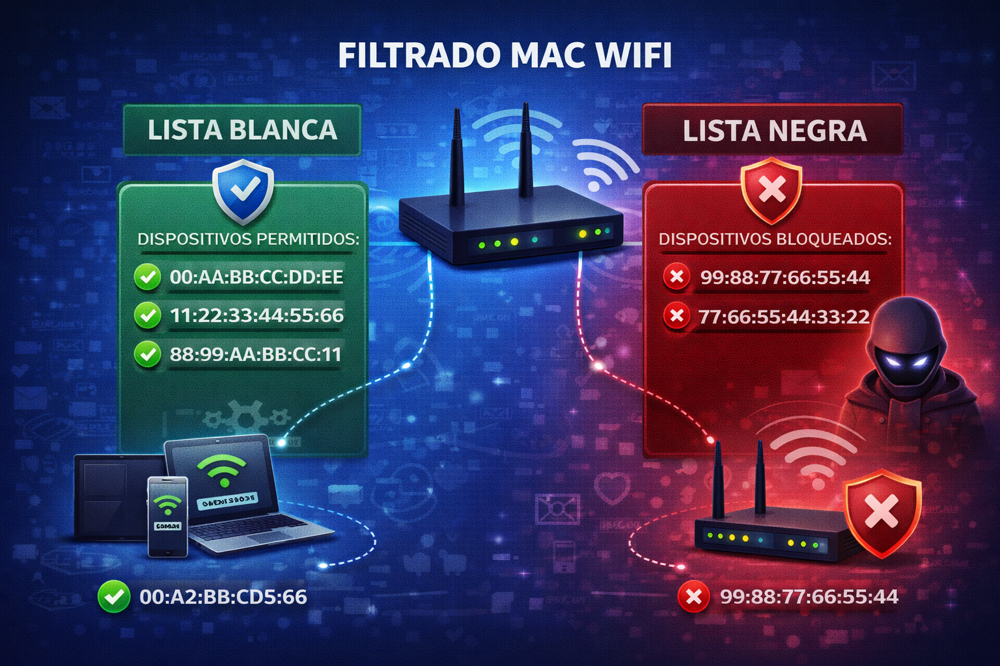

REDES INALÁMBRICAS¶
Introducción¶
La tecnología inalámbrica permite la transmisión de datos sin necesidad de cables físicos, utilizando en su lugar ondas electromagnéticas — radiofrecuencias, infrarrojos o microondas. Esta tecnología es la base de muchas formas de comunicación modernas como el Wi-Fi, Bluetooth o las redes móviles (4G, 5G).
Una red inalámbrica es un tipo de red de comunicación de datos en la que los dispositivos se conectan entre sí sin utilizar cables físicos. En su lugar, emplean tecnologías inalámbricas para transmitir y recibir información a través del aire.
Las redes inalámbricas se clasifican según su alcance geográfico en cuatro grandes categorías: WPAN, WLAN, WMAN y WWAN.
Clasificación por alcance¶

| Tipo | Nombre completo | Alcance | Tecnologías | Ejemplo de uso |
|---|---|---|---|---|
| WPAN | Wireless Personal Area Network | Hasta 10 metros | Bluetooth, ZigBee, NFC | Auriculares inalámbricos, relojes inteligentes |
| WLAN | Wireless Local Area Network | Hasta 100 metros (interior) | Wi-Fi (IEEE 802.11) | Red de oficina, red doméstica |
| WMAN | Wireless Metropolitan Area Network | Hasta 50 km | WiMAX (IEEE 802.16) | Conexión entre sedes de una ciudad |
| WWAN | Wireless Wide Area Network | Regional / global | 4G LTE, 5G (redes celulares) | Internet móvil, cobertura nacional |
WPAN — Red de área personal inalámbrica¶
Las WPAN cubren distancias muy cortas — normalmente unos pocos metros alrededor de una persona. Su objetivo es conectar dispositivos personales entre sí. Bluetooth es la tecnología más representativa, usada para auriculares, teclados, ratones y transferencia de ficheros entre dispositivos cercanos. Otra tecnología WPAN es NFC (Near Field Communication), utilizada en pagos contactless con el móvil.
WLAN — Red de área local inalámbrica¶
Las WLAN son el tipo de red inalámbrica más relevante para este módulo. Permiten conectar dispositivos dentro de un edificio o área local — una oficina, un aula o una vivienda. La tecnología dominante es Wi-Fi, basada en el estándar IEEE 802.11. Una WLAN típica utiliza uno o varios puntos de acceso que proporcionan cobertura inalámbrica y conectan los dispositivos a la red cableada.
WMAN — Red de área metropolitana inalámbrica¶
Las WMAN cubren áreas del tamaño de una ciudad. La tecnología más conocida es WiMAX (IEEE 802.16), que permite alcanzar distancias de hasta 50 km. Se utiliza principalmente para dar conectividad de banda ancha en zonas donde no llega el cable o la fibra óptica.
WWAN — Red de área extensa inalámbrica¶
Las WWAN proporcionan cobertura regional, nacional o incluso global. Las redes de telefonía móvil — 4G LTE y 5G — son el ejemplo más claro. Utilizan una infraestructura de antenas celulares distribuidas por el territorio para ofrecer conectividad a dispositivos móviles.

Evolución de los estándares de redes celulares. Imagen: Wikimedia Commons, CC BY-SA 4.0.
Componentes de una red WLAN¶
Para que una red inalámbrica WLAN funcione, necesitamos al menos tres elementos: un punto de acceso que emita la señal, una tarjeta de red inalámbrica en cada dispositivo cliente y una configuración común (SSID y seguridad) que permita la asociación entre ambos.
El punto de acceso (AP)¶
Un punto de acceso (Access Point, AP) es un dispositivo de red cuya función exclusiva es permitir la conexión inalámbrica de dispositivos que dispongan de una tarjeta de red Wi-Fi. El AP actúa como puente entre la red cableada y los dispositivos inalámbricos — recibe las tramas por el aire y las retransmite a la red Ethernet, y viceversa.

Punto de acceso Linksys Wireless-G. Imagen: Wikimedia Commons, CC0.
Un punto de acceso no enruta tráfico entre redes distintas ni asigna direcciones IP. Para que los dispositivos que se conectan a él tengan acceso a Internet, el AP debe estar conectado a una red que ya disponga de router y, opcionalmente, de servidor DHCP.
En Packet Tracer, el dispositivo equivalente es el AP-PT-N, disponible en Network Devices → Wireless Devices.
Configuración por defecto del AP en Packet Tracer
Al añadir un AP-PT-N a la topología, los portátiles que tengan una tarjeta inalámbrica se asociarán automáticamente al punto de acceso si el SSID y la autenticación coinciden con los valores por defecto. Para ver estos parámetros, accede a la pestaña Config → Port 1 del AP.
El dispositivo multifunción¶
Un dispositivo multifunción integra en un solo equipo varias funciones que normalmente requieren dispositivos separados:
| Función | Descripción |
|---|---|
| Punto de acceso | Permite la conexión inalámbrica de dispositivos Wi-Fi |
| Router | Gestiona el tráfico entre la red local (LAN) y la red externa (Internet) |
| Switch | Conecta varios dispositivos por cable dentro de la red local |
| Servidor DHCP | Asigna automáticamente direcciones IP a los dispositivos de la red |

Router inalámbrico Linksys WRT54G — un dispositivo multifunción típico. Imagen: Wikimedia Commons, dominio público.
Este tipo de dispositivo es el que encontramos habitualmente en hogares y pequeñas oficinas. Un solo equipo proporciona toda la infraestructura de red necesaria: conectividad por cable, conectividad inalámbrica, enrutamiento hacia Internet y asignación automática de IPs.
En Packet Tracer, el dispositivo equivalente es el WRT300N, disponible en Network Devices → Wireless Devices.
Comparativa: AP vs dispositivo multifunción¶
| Característica | Punto de acceso (AP) | Dispositivo multifunción |
|---|---|---|
| Conexión inalámbrica | Sí | Sí |
| Enrutamiento entre redes | No | Sí |
| Asignación de IPs (DHCP) | No | Sí |
| Puertos Ethernet (switch) | No (solo 1 para uplink) | Sí (típicamente 4 puertos LAN + 1 WAN) |
| Funcionamiento autónomo | No — depende de un router externo | Sí — funciona de forma independiente |
| Interfaz de administración web (GUI) | Limitada o inexistente | Completa |
| Uso típico | Ampliar cobertura en redes existentes | Red doméstica o de pequeña oficina |
La elección entre un AP y un dispositivo multifunción depende del escenario. Si ya existe una infraestructura de red con router y switch, basta con añadir un AP para dar cobertura inalámbrica. Si se necesita crear una red completa desde cero, el dispositivo multifunción es la opción más práctica.
La tarjeta de red inalámbrica¶
Para que un dispositivo — portátil, smartphone, tablet — pueda conectarse a una red Wi-Fi, necesita disponer de una tarjeta de red inalámbrica (wireless NIC). Esta tarjeta se encarga de enviar y recibir datos mediante ondas de radio en las frecuencias de 2,4 GHz y/o 5 GHz.
En la mayoría de dispositivos modernos la tarjeta inalámbrica viene integrada de fábrica. En Packet Tracer, los portátiles ya incluyen un módulo inalámbrico por defecto. La configuración de la tarjeta — SSID al que conectar, tipo de autenticación y contraseña — se realiza desde la pestaña Desktop → PC Wireless del dispositivo o directamente desde Config → Wireless0.
Identificación de la red: el SSID¶
Qué es el SSID¶
El SSID (Service Set Identifier) es el nombre que identifica a una red inalámbrica. Cada punto de acceso o dispositivo multifunción emite un SSID para que los dispositivos cercanos puedan identificar la red y solicitar la conexión. Es el nombre que aparece en la lista de redes Wi-Fi disponibles de un portátil o un móvil — por ejemplo, MOVISTAR_A1B2, eduroam o wifi_oficina.
El SSID puede tener hasta 32 caracteres y distingue entre mayúsculas y minúsculas — MiRed y mired son dos SSID diferentes.
Broadcast SSID vs Hidden SSID¶

Fuente: Imagen generada con IA (ChatGPT, OpenAI), 2026.
Existen dos modos de difusión del SSID:
| Modo | Comportamiento | Consecuencia |
|---|---|---|
| Broadcast SSID | El AP anuncia el nombre de la red periódicamente | La red aparece automáticamente en la lista de redes disponibles |
| Hidden SSID | El AP no anuncia el nombre de la red | La red no aparece en la lista; el cliente debe conocer y escribir el SSID manualmente para conectarse |
El modo broadcast es el configurado por defecto en la mayoría de dispositivos. Es cómodo para el usuario porque la red se descubre automáticamente.
El modo hidden oculta la red de la lista visible, lo que añade una capa muy básica de seguridad — impide que usuarios casuales vean la red. Sin embargo, ocultar el SSID no es una medida de seguridad real: un atacante con herramientas de análisis de redes (como Wireshark o Kismet) puede detectar igualmente la red, ya que los paquetes de asociación entre cliente y AP contienen el SSID en texto plano.
Cuándo ocultar el SSID
Ocultar el SSID puede ser útil como medida complementaria en redes corporativas o de invitados, pero nunca debe ser la única protección. Combínalo siempre con una autenticación robusta (WPA2 o WPA3).
Configuración del SSID en Packet Tracer¶
En un punto de acceso (AP-PT-N), el SSID se configura en Config → Port 1. El campo SSID muestra el nombre actual de la red — por defecto, Default.

En un dispositivo multifunción (WRT300N), el SSID se configura desde la interfaz GUI (pestaña GUI → Wireless → Basic Wireless Settings) o desde Config → Wireless.

Si cambias el SSID del punto de acceso, los dispositivos que estaban conectados perderán la conexión. Deberás actualizar el SSID en la configuración inalámbrica de cada cliente para que vuelvan a asociarse.
Seguridad en redes inalámbricas¶
La seguridad inalámbrica tiene dos objetivos principales: autenticar a los dispositivos que se conectan (verificar que están autorizados) y cifrar los datos transmitidos por el aire (evitar que un tercero los intercepte y lea).
Tipos de autenticación¶
Open System (Sistema Abierto)¶
La autenticación Open System no requiere ninguna credencial para conectarse a la red. Cualquier dispositivo que conozca el SSID puede asociarse al punto de acceso sin restricción alguna.
Se utiliza típicamente en redes Wi-Fi públicas — cafeterías, aeropuertos, hoteles — donde se prioriza la accesibilidad sobre la seguridad. Los datos transmitidos no se cifran, lo que significa que cualquier persona en el rango de la red puede capturar el tráfico.
Mala práctica: usar Open System para redes con datos sensibles
WEP (Wired Equivalent Privacy)¶
WEP fue el primer protocolo de seguridad para redes Wi-Fi, introducido en 1997 como parte del estándar 802.11 original. Utiliza el algoritmo de cifrado RC4 con claves de 64 o 128 bits.
WEP se considera completamente inseguro desde hace años. Las vulnerabilidades en su implementación del cifrado RC4 permiten que un atacante descubra la clave en cuestión de minutos utilizando herramientas como aircrack-ng. No debe utilizarse bajo ninguna circunstancia.
WPA (Wi-Fi Protected Access)¶
WPA surgió en 2003 como solución temporal mientras se desarrollaba un estándar más robusto. Introdujo el protocolo TKIP (Temporal Key Integrity Protocol), que mejoraba WEP al cambiar la clave de cifrado dinámicamente con cada paquete transmitido.
Aunque WPA fue un avance significativo respecto a WEP, TKIP también presenta vulnerabilidades conocidas. WPA se considera obsoleto y no debe usarse en instalaciones nuevas.
WPA2 (Wi-Fi Protected Access 2)¶
WPA2 es el estándar de seguridad Wi-Fi más utilizado en la actualidad, vigente desde 2004. Su principal mejora respecto a WPA es el uso del algoritmo de cifrado AES-CCMP (Advanced Encryption Standard - Counter Mode with CBC-MAC Protocol), que ofrece un nivel de seguridad significativamente superior a TKIP.
WPA2 admite dos modos de funcionamiento:
| Modo | Nombre técnico | Autenticación | Uso típico |
|---|---|---|---|
| WPA2 Personal | WPA2-PSK | Clave precompartida (Pre-Shared Key) — todos los usuarios usan la misma contraseña | Hogares, pequeñas oficinas |
| WPA2 Enterprise | WPA2-EAP | Cada usuario tiene credenciales únicas (usuario/contraseña), validadas por un servidor RADIUS | Empresas, instituciones educativas |
En WPA2 Personal (también llamado WPA2-PSK), se configura una contraseña — la passphrase — tanto en el punto de acceso como en cada dispositivo cliente. Esta contraseña debe tener entre 8 y 63 caracteres.
En WPA2 Enterprise, no existe una contraseña compartida. Cada usuario se autentica con sus propias credenciales ante un servidor RADIUS externo. Esto permite mayor control — se puede revocar el acceso de un usuario individual sin cambiar la contraseña de toda la red.
Aunque WPA3 es técnicamente superior, WPA2 sigue siendo el estándar más extendido porque la mayoría de dispositivos en uso lo soportan. La transición a WPA3 es gradual y muchos equipos antiguos no son compatibles.
WPA3 (Wi-Fi Protected Access 3)¶
WPA3 es la versión más reciente del protocolo, certificada en 2018. Introduce mejoras importantes respecto a WPA2:
| Mejora | Descripción |
|---|---|
| SAE (Simultaneous Authentication of Equals) | Sustituye al handshake PSK, resistente a ataques de diccionario offline |
| Cifrado individual | Cada dispositivo recibe una clave de cifrado única |
| Forward secrecy | Si se compromete una clave, las sesiones anteriores siguen protegidas |
| Cifrado de 192 bits | Disponible en el modo Enterprise para entornos de alta seguridad |
A pesar de sus ventajas, WPA3 tiene una adopción limitada porque requiere hardware compatible. Muchos dispositivos y puntos de acceso actualmente en uso solo soportan hasta WPA2. Por esta razón, WPA2 sigue siendo la opción más práctica en la mayoría de escenarios.
Comparativa de protocolos de seguridad¶

Fuente: Imagen generada con IA (ChatGPT, OpenAI), 2026.| Protocolo | Año | Cifrado | ¿Seguro? | Estado actual |
|---|---|---|---|---|
| WEP | 1997 | RC4 (64/128 bits) | No | Obsoleto — no usar |
| WPA | 2003 | TKIP (RC4 mejorado) | No | Obsoleto — no usar |
| WPA2 | 2004 | AES-CCMP (128 bits) | Sí | Estándar actual |
| WPA3 | 2018 | AES-CCMP / AES-GCMP (192 bits) | Sí | Recomendado si hay soporte |
Mala práctica: usar protocolos obsoletos
Algoritmos de cifrado: TKIP vs AES¶
El algoritmo de cifrado determina cómo se protegen los datos transmitidos por el aire. Los dos algoritmos principales en redes Wi-Fi son TKIP y AES.
| Característica | TKIP | AES (CCMP) |
|---|---|---|
| Estándar | WPA | WPA2 / WPA3 |
| Base criptográfica | RC4 (mejorado) | AES (cifrado por bloques) |
| Seguridad | Vulnerable — ataques conocidos | Robusto — sin vulnerabilidades prácticas conocidas |
| Rendimiento | Menor — procesamiento por software | Mayor — aceleración por hardware en la mayoría de chips |
| Compatibilidad | Dispositivos antiguos | Dispositivos desde ~2006 en adelante |
TKIP se diseñó como parche temporal para dispositivos que solo soportaban WEP. Aunque fue una mejora, comparte la base criptográfica de RC4 y tiene vulnerabilidades conocidas que permiten la inyección de paquetes.
AES-CCMP es un algoritmo de cifrado por bloques considerado seguro por la comunidad criptográfica y utilizado también en aplicaciones militares y gubernamentales. Es el algoritmo por defecto en WPA2 y WPA3.
Usa siempre AES como algoritmo de cifrado
Si el dispositivo ofrece la opción de elegir entre TKIP y AES (o AES+TKIP), selecciona siempre AES. TKIP solo tiene sentido para mantener compatibilidad con dispositivos muy antiguos que no soportan AES, un caso cada vez más raro.
El servidor RADIUS¶
Fuente: Imagen generada con IA (ChatGPT, OpenAI), 2026
Un servidor RADIUS (Remote Authentication Dial-In User Service) es un servidor de autenticación centralizado que valida las credenciales de los usuarios que intentan conectarse a la red. Es el componente clave que diferencia WPA2 Enterprise de WPA2 Personal.
El flujo de autenticación en WPA2 Enterprise funciona así:
- El cliente inalámbrico solicita conectarse al punto de acceso.
- El punto de acceso reenvía la solicitud de autenticación al servidor RADIUS.
- El servidor RADIUS comprueba las credenciales (usuario y contraseña) en su base de datos.
- Si las credenciales son válidas, el servidor RADIUS autoriza la conexión y genera las claves de cifrado para la sesión.
Las ventajas de usar RADIUS frente a una clave compartida (PSK) son:
| Aspecto | WPA2-PSK | WPA2-Enterprise + RADIUS |
|---|---|---|
| Credenciales | Una contraseña para todos | Un usuario/contraseña por persona |
| Revocación de acceso | Hay que cambiar la contraseña de toda la red | Se desactiva solo la cuenta del usuario |
| Auditoría | No se puede saber quién se conectó | Registro de conexiones por usuario |
| Escalabilidad | Difícil de gestionar con muchos usuarios | Gestión centralizada |
En Packet Tracer, se puede configurar un servidor RADIUS añadiendo el servicio AAA en un servidor genérico y configurando las cuentas de usuario en él. El punto de acceso o dispositivo multifunción se configura en modo WPA2 Enterprise apuntando a la IP del servidor RADIUS.
Filtrado por dirección MAC¶
El filtrado MAC es un mecanismo de control de acceso que permite configurar en el punto de acceso una lista de direcciones MAC autorizadas (o denegadas) para conectarse a la red.
Cada tarjeta de red tiene una dirección MAC (Media Access Control) única de fábrica — un identificador de 48 bits expresado como seis pares hexadecimales (por ejemplo, 00:1A:2B:3C:4D:5E). El filtrado MAC utiliza esta dirección para decidir si un dispositivo puede o no acceder a la red.
Existen dos enfoques:

Fuente: Imagen generada con IA (ChatGPT, OpenAI), 2026.| Tipo de lista | Comportamiento |
|---|---|
| Lista blanca (allow list) | Solo se permite la conexión de las MACs incluidas en la lista |
| Lista negra (deny list) | Se deniega la conexión de las MACs incluidas en la lista; el resto puede conectar |
En el dispositivo multifunción WRT300N de Packet Tracer, el filtrado MAC se configura desde la interfaz GUI en Wireless → Wireless MAC Filter.
Mala práctica: confiar exclusivamente en el filtrado MAC
El filtrado MAC no es una medida de seguridad fiable por sí sola. Un atacante puede capturar las direcciones MAC de los dispositivos autorizados observando el tráfico de la red y luego suplantar (spoof) una de esas direcciones en su propia tarjeta de red. Utiliza el filtrado MAC siempre como complemento de una autenticación robusta, nunca como sustituto.
Administración de dispositivos inalámbricos¶
Los dispositivos multifunción incluyen una serie de funcionalidades de administración que permiten configurar y mantener la red de forma centralizada.
Configuración de red: IP y DHCP¶
Un dispositivo multifunción tiene dos interfaces de red diferenciadas:
| Interfaz | Función | Configuración típica |
|---|---|---|
| Internet (WAN) | Conexión a la red externa / ISP | IP estática o dinámica (DHCP del ISP) |
| LAN | Red local interna | IP fija (ej. 192.168.1.1) — actúa como gateway de la red local |
El dispositivo incluye un servidor DHCP integrado que asigna automáticamente direcciones IP a los dispositivos que se conectan — tanto por cable como por Wi-Fi. La configuración del DHCP incluye el rango de IPs a asignar, la máscara de subred, la puerta de enlace y el servidor DNS.
En el WRT300N de Packet Tracer, la configuración de la interfaz WAN se realiza desde GUI → Setup → Internet Setup, y la de la LAN y el DHCP desde GUI → Setup → Network Setup.
DHCP desactivado
Si se desactiva el servidor DHCP del dispositivo multifunción, los dispositivos que se conecten no recibirán IP automáticamente. Será necesario configurar manualmente la dirección IP, la máscara de subred, la puerta de enlace y el DNS en cada cliente.
Administración remota¶
La administración remota permite acceder a la interfaz de configuración del dispositivo multifunción desde un navegador web. El dispositivo ejecuta un pequeño servidor web interno al que se accede introduciendo su IP en el navegador — por ejemplo, http://192.168.1.1.
El acceso está protegido por un usuario y contraseña. Las credenciales por defecto varían según el fabricante — en muchos dispositivos Linksys son admin/admin. Es fundamental cambiar estas credenciales durante la configuración inicial para evitar accesos no autorizados.
En Packet Tracer, la interfaz GUI del WRT300N simula esta administración web. Para acceder desde un PC de la red, basta con abrir el navegador y escribir la IP de la interfaz LAN del dispositivo.
Cambia siempre las credenciales por defecto
Las credenciales de fábrica de los dispositivos de red son públicas y conocidas. Un atacante que tenga acceso a la red puede buscar el modelo del dispositivo, obtener las credenciales por defecto y tomar el control total de la red. Cambia el usuario y la contraseña inmediatamente después de la primera configuración.
Firmware: concepto y actualización¶
El firmware es el software interno del dispositivo de red — el sistema operativo que controla todas sus funciones. Está almacenado en una memoria flash dentro del dispositivo y se ejecuta cada vez que este se enciende.
Los fabricantes publican periódicamente actualizaciones de firmware que pueden incluir:
| Tipo de actualización | Descripción |
|---|---|
| Correcciones de seguridad | Parches para vulnerabilidades descubiertas |
| Nuevas funcionalidades | Soporte para nuevos estándares o protocolos |
| Correcciones de errores | Solución a fallos de funcionamiento |
| Mejoras de rendimiento | Optimización del uso de recursos |
El proceso de actualización consiste en descargar el fichero de firmware desde la web del fabricante y cargarlo en el dispositivo a través de la interfaz de administración web. En el WRT300N de Packet Tracer, esta opción se encuentra en GUI → Administration → Firmware Upgrade.
Mala práctica: actualizar firmware sin precauciones
Backup y restauración de configuración¶
Los dispositivos multifunción permiten guardar una copia de seguridad (backup) de su configuración actual y restaurarla posteriormente. Esta funcionalidad es esencial para:
- Recuperar la configuración después de un fallo o un reset accidental.
- Replicar la misma configuración en varios dispositivos.
- Volver a un estado conocido después de realizar cambios problemáticos.
El proceso de backup genera un fichero que contiene todos los parámetros configurados — IPs, SSID, seguridad, DHCP, filtrado MAC, etc. Para restaurar, basta con cargar ese fichero en el dispositivo a través de la interfaz de administración.
En el WRT300N de Packet Tracer, estas opciones están en GUI → Administration → Management (secciones Backup Configuration y Restore Configuration).
El reset de fábrica (factory reset) restaura todos los parámetros a sus valores originales de fábrica, eliminando cualquier configuración personalizada. Se puede realizar desde la interfaz GUI o mediante el botón físico de reset del dispositivo.
Antes de hacer un reset de fábrica, asegúrate de tener un backup actualizado. Un reset sin respaldo implica tener que reconfigurar el dispositivo completamente desde cero.
Canales y frecuencias Wi-Fi¶
Las redes Wi-Fi operan en dos bandas de frecuencia principales: 2,4 GHz y 5 GHz. Cada banda se divide en varios canales — franjas de frecuencia individuales por las que se transmiten los datos.
Banda de 2,4 GHz¶
La banda de 2,4 GHz ofrece mayor alcance pero menor velocidad. Dispone de 13 canales en Europa (14 en Japón), pero los canales se solapan entre sí. Solo los canales 1, 6 y 11 no se solapan mutuamente, por lo que son los recomendados para evitar interferencias.
Canales Wi-Fi en la banda de 2,4 GHz mostrando el solapamiento entre canales adyacentes. Imagen: Wikimedia Commons, CC BY-SA 3.0.
Banda de 5 GHz¶
La banda de 5 GHz ofrece mayor velocidad y más canales sin solapamiento, pero tiene menor alcance y peor penetración a través de paredes y obstáculos. Es la banda preferida para entornos con alta densidad de dispositivos o donde se necesita máximo rendimiento.
Comparativa de bandas¶
| Característica | 2,4 GHz | 5 GHz |
|---|---|---|
| Alcance | Mayor (~50-70 m interior) | Menor (~30-35 m interior) |
| Velocidad máxima | Menor | Mayor |
| Canales sin solapamiento | 3 (1, 6, 11) | 24+ |
| Interferencias | Más (Bluetooth, microondas, otros dispositivos) | Menos |
| Penetración de obstáculos | Mejor | Peor |
Dispositivos de doble banda
Los dispositivos Wi-Fi modernos (802.11ac y 802.11ax) son de doble banda — pueden operar simultáneamente en 2,4 GHz y 5 GHz. Esto permite conectar dispositivos que necesitan alcance a la banda de 2,4 GHz y dispositivos que necesitan velocidad a la de 5 GHz.
Estándares Wi-Fi (IEEE 802.11)¶
El estándar IEEE 802.11 define las especificaciones técnicas de las redes WLAN. A lo largo de los años se han publicado distintas revisiones, cada una con mejoras en velocidad, alcance y eficiencia.
| Estándar | Nombre comercial | Año | Banda | Velocidad máxima teórica |
|---|---|---|---|---|
| 802.11b | — | 1999 | 2,4 GHz | 11 Mbps |
| 802.11a | — | 1999 | 5 GHz | 54 Mbps |
| 802.11g | — | 2003 | 2,4 GHz | 54 Mbps |
| 802.11n | Wi-Fi 4 | 2009 | 2,4 / 5 GHz | 600 Mbps |
| 802.11ac | Wi-Fi 5 | 2013 | 5 GHz | 6,93 Gbps |
| 802.11ax | Wi-Fi 6 / 6E | 2020 | 2,4 / 5 / 6 GHz | 9,6 Gbps |
Las velocidades indicadas son teóricas máximas. En la práctica, la velocidad real depende de factores como la distancia al AP, los obstáculos, las interferencias y el número de dispositivos conectados.
Los estándares son retrocompatibles — un dispositivo Wi-Fi 6 puede conectarse a un punto de acceso Wi-Fi 4, aunque la conexión funcionará a la velocidad del estándar más antiguo.